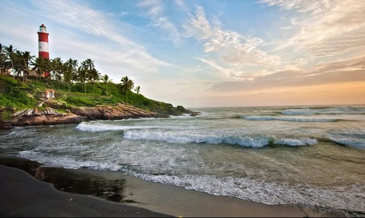

Padmanabhapuram Palace

his 16th century palace quenches the thirst of art lovers. This fascinating structure has a special air about it. The rosewood carved ceilings and a fine collection of paintings makes it one of the best specimens of Kerala.
Location:Kerala
Napier Museum

Named after Lord Napier, this art and history museum was established in 1855. An exemplary example of gothic architecture-style, Napier Museum boasts greatly of its natural air conditioning system.
Location:Kerala
Thiruvananthapuram Zoo

Thiruvananthapuram Zoo, one of the oldest terrarium in the country which was established as a supplemental to the Napier Museum in the year 1857 by the former Maharaja of Travancore
Location:Kerala
Vizhinjam Lighthouse

The lighthouse was constructed in 1925, the 36 m high masonry tower is at an elevation of 57 m from sea level. There are 144 twisting steps and a steel ladder to reach the top.
Location:Kerala
Padmanabhaswamy Temple

he place of worship has lent its names to the capital city as ‘Thiru’ ‘Anantha’ ‘Puram’, which means Sacred Abode of Lord Anantha Padmanabha. Dravidian style of architecture is prominent in this holy structure.
Location:Kerala
Kovalam Beach
Kovalam Beach is the treasure chest of multitude of adventure activities. Along with the sessions of para-sailing, diving and wind surfing, the beach also allows you to go on a leisure walk and offers a playful swimming time.
Location:13km away from the city.
Shanghumukham Beach

Shanghumukham Beach is an ideal place for those seeking peace and serenity. Far from the hustle and bustle of the city, this place is known for breath-taking sunrises and sunsets; visit to this beach is one of the best things to do in Trivandrum
Location:Kerala
Neyyar Dam and Wildlife Sanctuary

Built in 1958, the dam is an ideal family picnic spot which is set against the mesmerizing landscape. It is built where rivers like Neyyar, Kallar and Mullayar confluence. The area is famed for obtaining several medicinal herbs as well.
Location:Kerala
Ponmudi

It is situated 915 meters above sea level and offers respite from the heat and hustle and bustle of other cities.
Location:61 kms from Trivandrum
Veli Tourist Village

It is situated 8 kms from the city, where Veli Lake and Arabian Sea confluences. The charming landscape allures one to explore this much sort after destination.
Location:Kerala